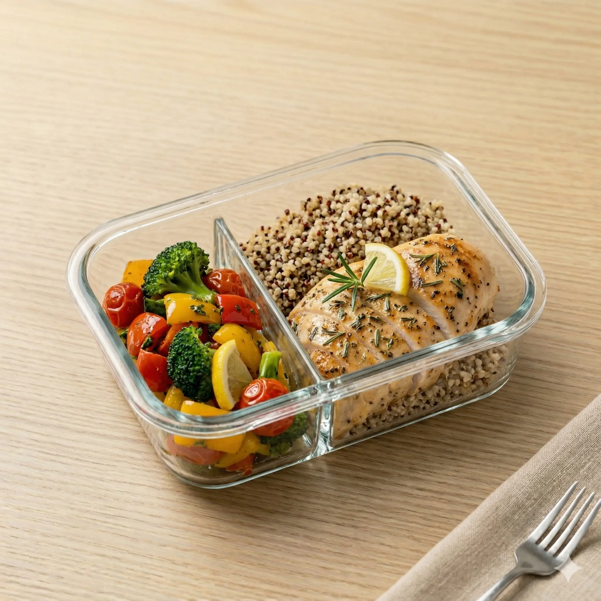
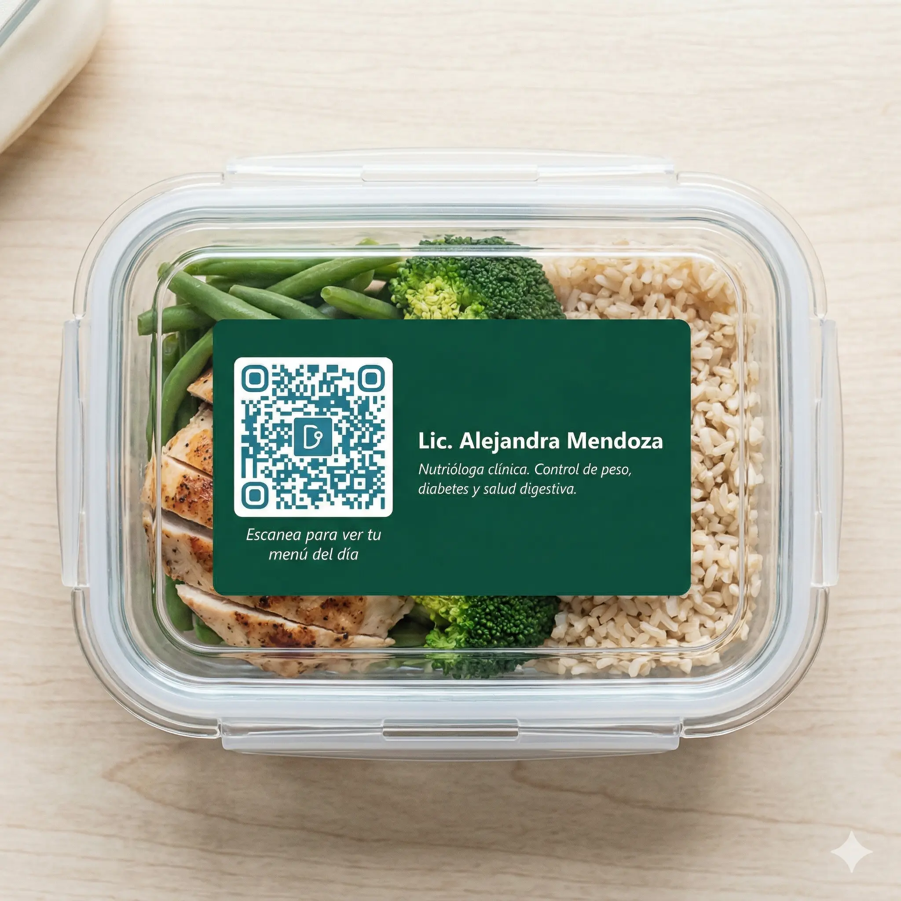
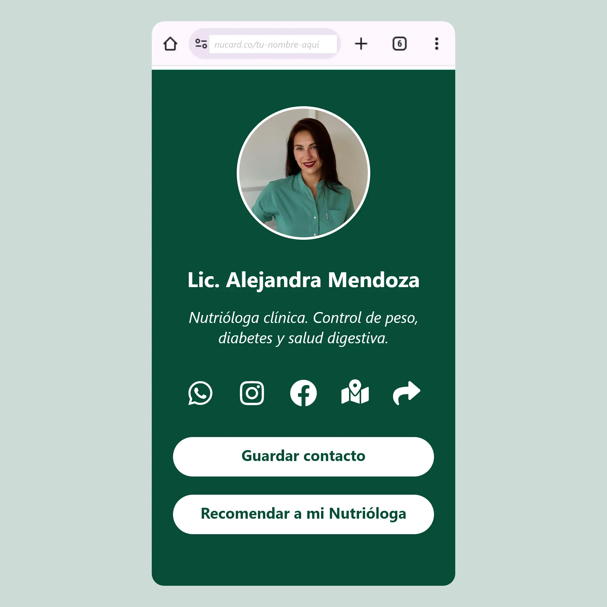

Tus pacientes reciben su comida preparada exactamente como tú la indicaste. Sin que cambies nada de tu práctica.

Tu plan sale perfecto de la consulta. Pero la adherencia depende de la cocina de tu paciente.
Tu plan sale igual de perfecto. Y se cumple — porque la comida llega preparada.
Tu trabajo no cambia. Solo añades el puente entre el plan y el plato.
Cada platillo que recoge tu paciente lleva tu nombre. Cuando alguien pregunte "¿dónde compraste esa comida?", tu paciente solo tiene que mostrar el contenedor.


Profesionales con cédula que entienden por qué cada gramo, cada ingrediente y cada método de cocción importa. Tu paciente elige quién cocina su plan.
Regístrate como Nutrióloga Titular. Sin inversión, sin cambiar cómo trabajas. Solo el puente que faltaba entre tu plan y el plato de tu paciente.
Las preguntas que nos hacen las nutriólogas antes de registrarse. Si tu pregunta no está aquí, regístrate y te contactaremos.
Registrarme →